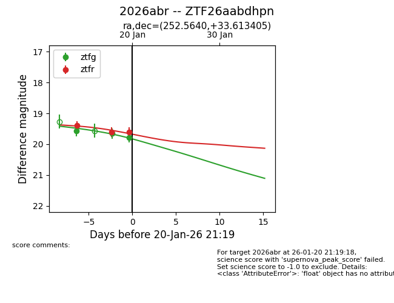
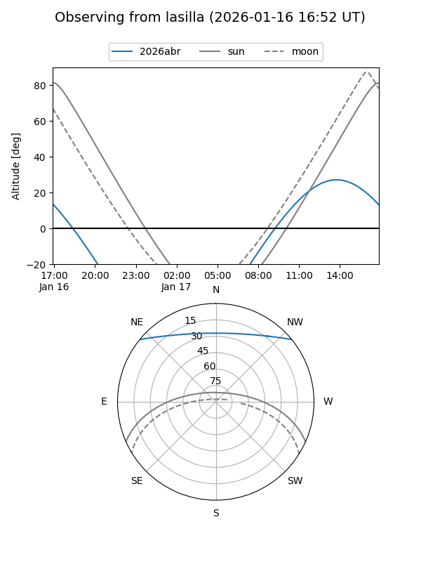
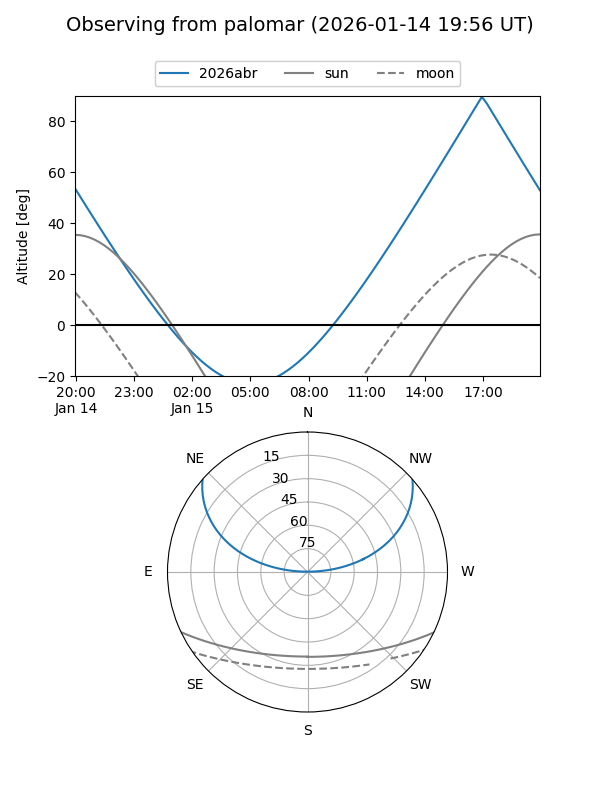
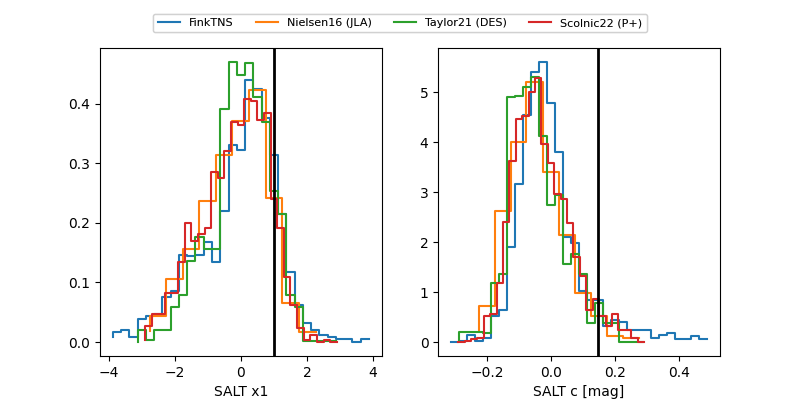

2026abr
Target 2026abr at 2026-01-20 21:21
Aliases and brokers:
FINK: link
Lasair: link
ALeRCE: link
TNS: link
YSE: link
alt names
ZTF26aabdhpn (ztf,fink_ztf)
2026abr (tns,yse)
Coordinates:
equatorial (ra, dec) = 252.5640,+33.61340
equatorial (HMS+DMS) = 16:50:15.37,+33:36:48.26
galactic (l, b) = (55.6544,+38.77903)
Flags:
Photometry:
last ztfg=19.79, ztfr=19.61
3 ztfg, 3 ztfr detections
Lightcurve

Visibility


Additional plots
